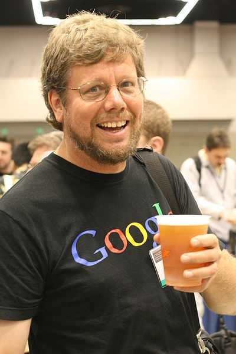

<div class="profile"><div>
  <div class="source">
Python (1989)
  </div>
  <div class="detail">
    
    <div class="search"><a href="http://www.google.com/cse?cx=partner-pub-6997921015773263:4467526896&ie=UTF-8&q=Guido van Rossum" target="_blank"></a> | <a href="http://en.wikipedia.org/wiki/Guido_van_Rossum" target="_blank">wiki</a></div>
    <div class="name"><a href="http://www.python.org/~guido/" target="_blank">Guido van Rossum</a></div>
    <div class="info"><b>Guido van Rossum</b> (born 31 January 1956[citation needed]) is a Dutch computer programmer who is best known as the author of the Python programming language. In the Python community, Van Rossum is known as a "Benevolent Dictator For Life" (BDFL), meaning that he continues to oversee the Python development process, making decisions where necessary.
    <p><b><a href="http://en.wikipedia.org/wiki/Python_(programming_language)" target="_blank">Python</a></b> is a general-purpose, high-level programming language whose design philosophy emphasizes code readability. Python claims to "[combine] remarkable power with very clear syntax", and its standard library is large and comprehensive. Its use of indentation for block delimiters is unique among popular programming languages.</p>
    </div>
  </div>
  <div class="photo">
    
  </div>
</div></div>